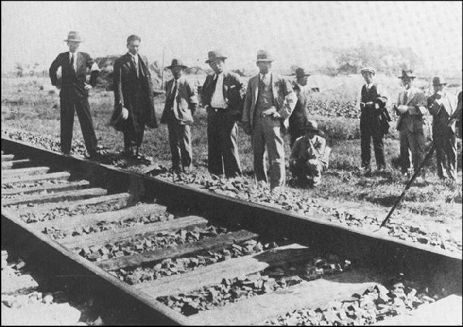
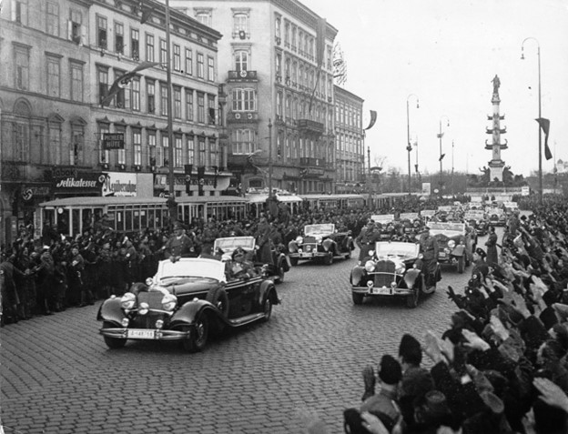
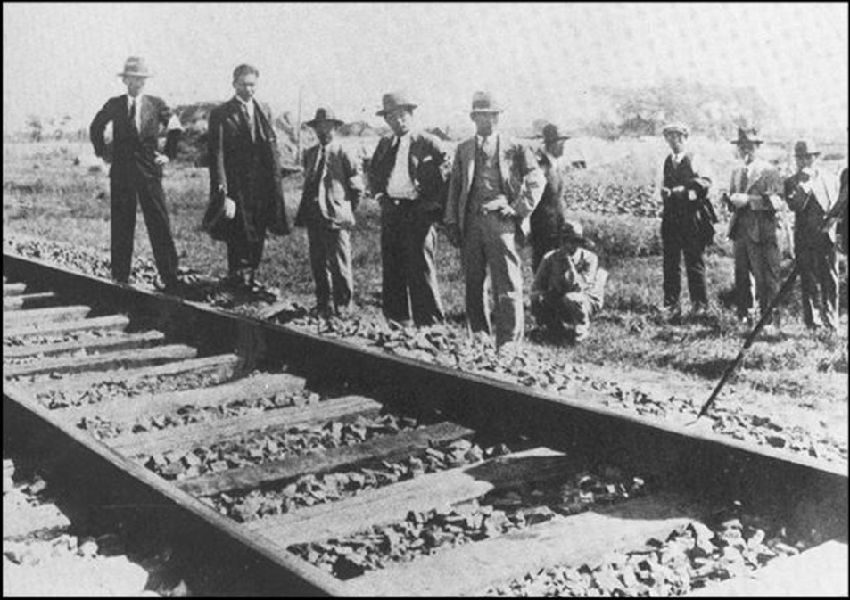
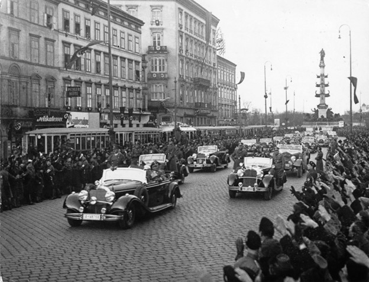

Gallery

1931 |
1938 |
 1939 |
 1939 |
 1939 |
 1941 |
 1941 |
 1945 |
 1945 |
| Home Page | ||
1931
The Mukden Incident was an explosion on
September 18, 1931, when Japanese troops occupied the city
of Mukden (now Shenyang, China), beginning Japan's invasion
of Manchuria. It was probably staged by the Japanese
Kwantung Army, independent of the government, to provide a
pretext for occupation. Japan saw Manchuria as essential to
the security of its colony in Korea and took the step with
apprehension about the unification of China under Chiang
Kai-shek and Soviet influence in the area.
A small explosion of the Japanese-owned
South Manchurian Railway, blamed on Chinese forces, provided
the pretext. Although damage was limited, Japanese troops
attacked the nearby Chinese garrison with artillery.
Offering little resistance because of Chiang Kai-shek's
policy of nonresistance, Japan was able to occupy all of
Manchuria within three months.
The League of Nations, through the
Lytton Commission, condemned Japan as the aggressor. In
response, Japan withdrew from the League and established the
puppet state of Manchukuo, which was not recognized by any
country. The Japanese government, unable to control the
Kwantung Army, saw its Prime Minister resign in December.
The subsequent government, swayed by public opinion,
endorsed the invasion, cementing Japan's control over
Manchuria until 1945.
30 Jan 1933
On January 30, 1933, Adolf Hitler was
appointed Chancellor of Germany by President Paul von
Hindenburg. The wide discontent with the economic
instability of Germany and the Treaty of Versailles drove
his rise to power. In the elections of July 1932, the Nazi
Party became the largest in the Reichstag, winning 230
seats. However, initially, Hindenburg was unwilling to
appoint Hitler because of his radicalism and the violence of
the SA (Brownshirts).
After the chancellorship of General
Kurt von Schleicher, conservative elites led by Franz von
Papen persuaded Hindenburg to appoint Hitler, assuming they
could still control him as long as the influence of Nazis in
the cabinet was reduced.
Hitler consolidated power immediately
upon entering office and established a police state with the
Gestapo. He also killed all opposition and began Nazi
totalitarian rule, laying the foundation for World War II.
Resource:
https://www.history.com/this-day-in-history/adolf-hitler-is-named-chancellor-of-germany
1938
In 1938, Austria and Germany were
united politically under the annexation by Adolf Hitler,
known as the Anschluss. The unification of both countries
had been a notion since 1919, but after Hitler came to
power, the idea became less attractive. A Nazi coup in 1934
failed, leaving Austria in the hands of a right-wing
authoritarian regime, which later put up little resistance
to Hitler's actions.
In February 1938, Hitler forced
Austrian Chancellor Kurt von Schuschnigg to turn power over
to Austrian Nazis. Schuschnigg called a plebiscite on the
Anschluss but, under Hitler's pressure, canceled it and
resigned, ordering the Austrian Army not to resist. German
troops entered Austria on March 12, 1938, and the next day,
Hitler annexed the country. A controlled plebiscite was held
on April 10, in which an overwhelming approval for Austria
joining Nazi Germany was registered.
Resource:
https://www.britannica.com/event/Anschluss
1 Sept 1939
Beginning on September 1, 1939, the
invasion of Poland by Nazi Germany initiated World War II.
Until its conclusion on October 5, 1939, the campaign was
marked with the strategies of "blitzkrieg," as German forces
moved quickly from multiple points of attack. The army of
Poland, at a strategic disadvantage in both manpower and
geography, was readily overcome. In the first days of
combat, the Luftwaffe decimated the Polish air force, paving
the way for rapid and mobile panzer divisions to subdue
ground forces.
Although both Britain and France
declared war on Germany on September 3, neither took any
effective action. A Polish counterattack in the Battle of
Bzura (September 9-15) enjoyed brief success but could not
stem the tide. On September 17, the Soviet Union invaded
Poland from the east, as provided for under the Nazi-Soviet
Pact, and Poland was defeated. Warsaw fell on September 27,
and the country was divided between Germany and the Soviet
Union.
The losses were as follows: 14,000 Germans
dead or missing, 30,000 wounded, while Polish losses were
about 66,000 dead, 130,000 wounded, and 400,000 captured.
Despite this crushing defeat, Polish resistance led to the
establishment of a strong underground movement and a Polish
army in exile, which made vital contributions to the Allied
war effort in key battles.
Dec 1941
The attack on Pearl Harbor on December
7, 1941, was a surprise Japanese assault on the U.S. naval
base in Hawaii, prompting the U.S. to enter World War II.
Tensions had escalated due to Japan’s expansion in Asia and
U.S. embargoes on vital resources like oil.
Planned by Admiral Isoroku Yamamoto,
the attack began on the morning of December 7, with nearly
200 aircraft launched in two waves. The first wave destroyed
over 180 U.S. aircraft and heavily damaged battleships,
including the USS Arizona and USS Oklahoma. The second wave
caused additional damage before the Japanese forces withdrew
by 9:00 am.
The attack resulted in over 3,400
American casualties, including more than 2,300 deaths.
However, U.S. aircraft carriers were not in port and
remained intact, later proving critical in the war. The
attack marked a turning point, leading to the U.S. declaring
war on Japan.
Resource:
https://www.britannica.com/event/Pearl-Harbor-attack
April 1940
In May 1940, there were 800,000 French
troops positioned behind the Maginot Line, while other
positions, considered weaker-like the Ardennes Forest-were
merely lightly guarded. Germany launched a diversionary
attack against the Maginot Line while their main assault
came through the allegedly tank-impassable Ardennes.
On May 10, the German army invaded the
Netherlands and Belgium; by May 12, a second powerful force
had broken through at Sedan and reached open ground by May
15, then to the coast by May 20, cutting the Allies from
behind and threatening their key ports such as Dunkirk.
The lightning advance of Germany, made
possible by better tactics and coordination of armored
divisions along with air power, had the Allies in disarray.
By May 22, the British Expeditionary Force was threatened
with encirclement, which made the French consider evacuation
and retreat.
Resource:
https://www.britannica.com/event/World-War-II/The-invasion-of-the-Low-Countries-and-France
May 8, 1945
V-E Day, May 8, 1945, was the official
end of World War II in Europe. On that day, German armed
forces formally and unconditionally surrendered to the
Allies. Conceding to the Allies on this day, German troops
surrendered their arms in cities from Prague to Copenhagen
and Berlin, where the final battles were crucial, with
significant fighting by the Soviet Union. Fighting in Prague
was extremely costly, and upwards of 1 million German
soldiers retreated west to avoid being captured by the
Soviets; the Soviets took approximately 2 million German
prisoners.
Although the formal surrender was
recognized on May 8, fighting continued in some areas. In
Moscow, May 9 became the official V-E Day, with Joseph
Stalin declaring victory for the Soviet Union. The day was
widely celebrated across Allied nations, including the U.S.,
U.K., and Soviet Union.
Sept 2, 1945
On September 2, 1945, Japan formally
surrendered to the Allies aboard the USS Missouri in Tokyo
Bay, ending World War II. By mid-1945, Japan faced
inevitable defeat due to the destruction of its military,
Allied bombings, and the capture of Okinawa. A planned
invasion of Japan was expected to cause heavy Allied
casualties.
After successfully testing the atomic
bomb, the U.S. issued the Potsdam Declaration demanding
Japan’s unconditional surrender, which Japan initially
rejected. On August 6 and 9, atomic bombs were dropped on
Hiroshima and Nagasaki, and the Soviet Union declared war on
Japan, attacking Manchuria. Facing these events, Emperor
Hirohito agreed to surrender, provided his sovereignty was
preserved. Following clarification from the Allies, Japan
announced its surrender on August 15, with the formal
ceremony held on September 2.
Resource:
https://www.history.com/this-day-in-history/japan-surrenders

1931 |
1938 |
1939 |
1939 |
1939 |
1941 |
1941 |
1945 |
1945 |
| Home Page | ||
https://www.britannica.com/event/Mukden-Incident
https://www.history.com/this-day-in-history/adolf-hitler-is-named-chancellor-of-germany
https://www.britannica.com/event/Anschluss
https://www.britannica.com/event/Invasion-of-Poland
https://www.britannica.com/event/World-War-II/The-invasion-of-the-Low-Countries-and-France
https://www.history.com/this-day-in-history/nazis-take-czechoslovakia
https://www.britannica.com/event/Pearl-Harbor-attack
https://www.history.com/this-day-in-history/japan-surrenders